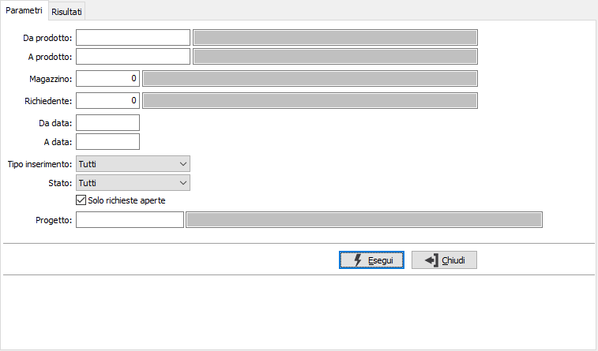
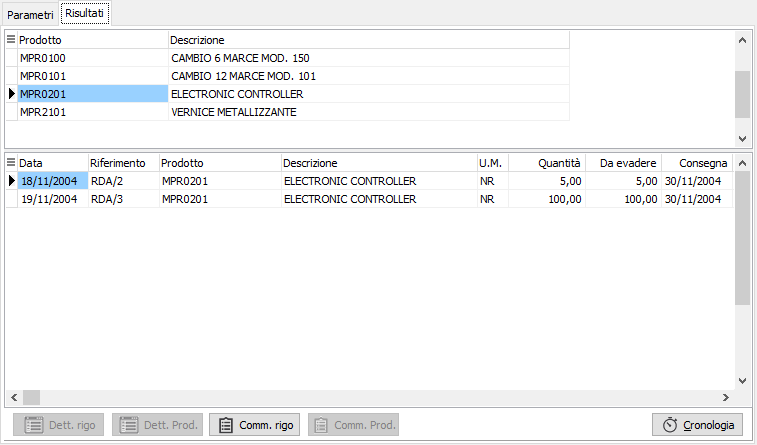
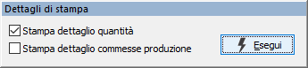

Analisi richieste di acquisto
Il programma effettua la visualizzazione delle richieste esistenti in archivio in base ai parametri inseriti dall’utente. Una volta visualizzati i risultati, è possibile attivare la stampa di quanto visualizzato nella sezione Risultati utilizzando il bottone Stampa o Anteprima della tool bar.
E’ possibile visualizzare le richieste relative ad una tipologia omogenea di inserimenti, e/o ad uno o più prodotti, e/o relativi ad uno specifico magazzino entro limiti di data specificati. E’ anche possibile selezionare le richieste in qualsiasi stato di avanzamento si trovino, selezionare solo le richieste aperte oppure tutte.
Se attiva la gestione progetti è possibile specificare anche il progetto da analizzare.
Il programma si articola su due finestre video. La prima, Parametri, consente la definizione dei parametri di analisi.

DA PRODOTTO: eventuale codice dell'articolo, presente in anagrafica Prodotti, da cui si desidera iniziare la selezione di analisi. Confermando a vuoto, la selezione inizia con il primo prodotto valido. Sul campo sono attive le funzioni di ricerca (F9).
A PRODOTTO: eventuale codice dell'articolo, presente in anagrafica Prodotti, a cui si desidera terminare la selezione di analisi. Confermando a vuoto, la selezione termina con l’ultimo valido. Sul campo sono attive le funzioni di ricerca (F9).
MAGAZZINO: eventuale codice del magazzino a cui si vuole restringere la selezione di analisi. Sul campo è attiva la vista F9 sulla tabella Magazzini.
RICHIEDENTE: indica il codice dell'utente che ha presentato la richiesta da utilizzare per la selezione dei documenti. Sul campo sono disponibili le funzioni di ricerca (F9) sulla tabella stessa.
DA DATA: eventuale data del documento da cui deve iniziare l’analisi dei documenti relativamente ai precedenti parametri di selezione. Confermando a vuoto, l’analisi inizia con il primo documento valido.
A DATA: eventuale data del documento con cui si desidera terminare l’analisi dei documenti relativamente ai precedenti parametri di selezione. Confermando a vuoto, l’analisi si conclude con l'ultimo documento valido.
TIPO INSERIMENTO: definisce la tipologia di richieste da analizzare:
tutti;
inseriti manualmente;
da disposizioni di produzione;
da MRP;
da ordini clienti.
STATO: definisce lo stato di avanzamento delle righe relative alle richieste da analizzare:
tutti;
in valutazione;
approvato;
accettato;
generata richiesta di offerta;
generato ordine fornitore;
ricevuta merce
respinto.
SOLO RICHIESTE APERTE: definisce se analizzare solo le richieste ancora da evadere (casella con segno di spunta) oppure tutte (casella bianca).
Confermando tramite pressione del bottone Esegui, viene avviata la selezione e richiamata la finestra video Risultati.

La finestra video è articolata su due sezioni: la sezione superiore elenca i gli articoli selezionati.
La sezione inferiore elenca invece i movimenti relativi all’articolo selezionato, che è quello contrassegnato dalla freccia, a sinistra del rigo nella sezione superiore. I pulsanti Dettaglio in basso, visibili solo se gestito il dettaglio delle quantità o delle commesse di produzione, se attivi, consentono la visualizzazione del dettaglio quantità o commesse di produzione del singolo rigo selezionato, oppure dei dettagli quantità o commesse di produzione totali del prodotto selezionato. Se attivo da configurazione è anche disponibile il pulsante Cronologia che consente di analizzare la situazione storica del rigo in analisi.

La pressione del bottone Stampa della tool bar consente la produzione di un report a stampa relativo ai dati selezionati; se sono gestiti i dettagli quantità o commessa di produzione compare la finestra a lato per decidere se stamparli o meno.